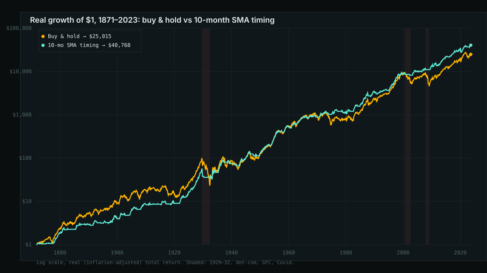
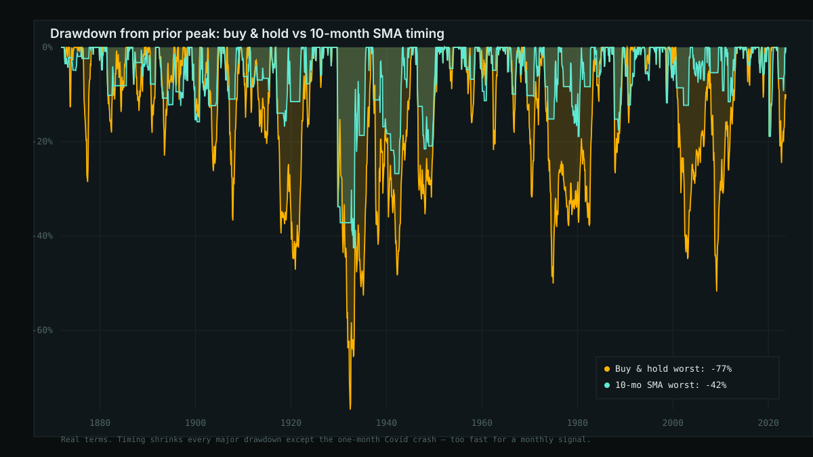

Does the 10-Month Moving Average Rule Beat Buy-and-Hold? A 152-Year Test
Financial media has spent much of 2026 flagging "death crosses" — the moment a stock or index's 50-day moving average falls below its 200-day moving average — as a bearish omen, with pieces this year calling out crosses in individual names and warning ones forming in whole sectors. The mirror-image "golden cross" gets the same treatment on the way up. It's one of the most repeated technical-analysis claims in markets: a falling short-term trend relative to the long-term trend means more pain is coming, so get out; the reverse means get back in.
That specific signal — 50-day vs. 200-day, on daily data — needs a long daily price history this backtest doesn't have access to. But there's a well-documented, much-studied cousin of it that uses monthly data: hold an asset only while its price is above its trailing 10-month moving average, and sit in cash otherwise. It's the timing rule from Mebane Faber's 2006/2007 paper "A Quantitative Approach to Tactical Asset Allocation," later updated and still cited in trend-following research today. Same underlying idea as the death cross — price relative to its own trend — just measured monthly instead of daily, which also makes it a fair proxy for what a less noisy, less whipsaw-prone version of "sell the death cross" would have done. So I ran 152 years of data through it.
Short version: the rule works, in the sense that matters least and the sense that matters most are both true at once. It beat buy-and-hold's raw return and did it with roughly half the volatility and barely half the worst drawdown. But it missed almost the entire Covid crash — a monthly signal can't see a one-month crash coming — and it missed most of the Covid rebound too, the single clearest example of what a lagging trend rule costs you when the market reverses fast.
Methodology
I used the same Robert Shiller monthly S&P 500 dataset (price, dividends, CPI, long-term rates) as the earlier leverage and CAPE posts on this blog, mirrored as CSV by datasets/s-and-p-500 on GitHub, truncated to the last fully-populated month (September 2023 — price data runs further but dividends and CPI don't yet). That's 1,833 months, January 1871 through September 2023.
- Signal: at the end of each month, compute the trailing 10-month simple moving average of the nominal S&P 500 price level. If that month's closing price is above its own 10-month average, the rule is "long" for the following month; if below, it's "in cash." This is a one-month lag by construction — no lookahead.
- Returns while long: the real (inflation-adjusted) monthly total return, price change plus 1/12th of the trailing annual dividend, reinvested — same total-return convention as the leverage post.
- Returns while in cash: 0% real, flat. This is a deliberate simplification, not a claim that cash actually returns zero — see Limitations.
- Buy-and-hold benchmark: the same real total-return series, fully invested the entire time, no signal applied.
The headline numbers
Over the full 1871–2023 window, the rule spent 63.3% of months invested and switched position 207 times — about 1.4 times a year.
| Strategy | Real CAGR | Max drawdown | Annualized vol | CAGR / vol | $1 → |
|---|---|---|---|---|---|
| Buy & hold | 6.89% | −76.8% | 14.2% | 0.49 | $25,015 |
| 10-month SMA timing | 7.24% | −42.5% | 9.6% | 0.76 | $40,768 |
Real (inflation-adjusted) terms, dividends reinvested while invested, 0% while in cash. CAGR/vol is a simple risk-adjusted-return ratio, not a true Sharpe ratio (no risk-free rate subtracted).
That's a genuinely striking result for a rule this simple: higher compound return, with roughly a third less volatility and almost half the max drawdown. The $1 invested in 1871 is worth 63% more under the timing rule than under buy-and-hold by 2023, and it got there with a much gentler ride.

Where the edge actually comes from: drawdowns, not upside
The CAGR advantage is real but modest. The much bigger effect is on the shape of the ride. Across every major U.S. bear market in the sample except one, the rule had the strategy mostly or entirely in cash before the worst of the damage:
| Episode | Months long* | Buy&hold return | Timing return |
|---|---|---|---|
| Great Crash (1929–32) | 12% | −75.8% | −34.5% |
| 1937–38 crash | 23% | −39.3% | −11.1% |
| 1973–74 bear market | 23% | −47.5% | −14.5% |
| Dot-com bust | 12% | −42.6% | −10.7% |
| Global Financial Crisis | 6% | −46.8% | −5.4% |
| 2022 bear market | 22% | −21.7% | −6.5% |
| Covid crash | 100% | −18.9% | −18.9% |
*Share of months within the episode the rule was positioned long, i.e. exposed to the drawdown. Real returns, start of episode to trough.
Six of seven episodes, the rule cut the loss by more than half. The exception is instructive: Covid was a one-month crash (February–March 2020), and a signal built on a 10-month average computed at the end of the prior month had no way to see it coming — the rule was still fully long when the floor gave way. That's the honest ceiling on what a monthly trend signal can do: it protects you from grinding declines that take months to develop, and does nothing for a crash that happens inside of one.

The other side of the ledger: whipsaws and late re-entries
A rule that gets you out of a third of your downside also gets you out of some of your upside — recoveries don't announce themselves any more clearly than crashes do, and a 10-month average takes time to turn back up. I looked at the 12 months immediately following each major trough:
| Recovery (12mo from trough) | Months long | Buy&hold return | Timing return |
|---|---|---|---|
| Post-Great Crash (1932–33) | 62% | +121.7% | +38.1% |
| Post-dot-com (2002–03) | 38% | +11.1% | +14.5% |
| Post-GFC (2009–10) | 62% | +26.1% | +18.8% |
| Post-Covid (2020–21) | 77% | +18.8% | +0.8% |
| Post-2022 (2022–23) | 54% | +6.5% | +9.4% |
Mixed, and that's the honest picture. In the two sharp, fast V-shaped rebounds — 1932 and especially Covid's — the rule missed a large chunk of the recovery before the signal flipped back to long, turning in roughly a third or less of buy-and-hold's return. In the two slower, choppier recoveries (dot-com, 2022), the rule actually beat buy-and-hold, because those recoveries had enough false starts that staying partially in cash avoided some of the chop. The Covid episode end to end is the cleanest single illustration of the whole trade-off: the rule gave back none of the crash's protection (it was still fully long when the crash hit) but it also captured almost none of the fastest-in-a-century rebound that followed it — the two failures bookend each other.
Does the long horizon actually need it? Rolling-window results
Same test the leverage post ran: across every rolling window of a given length, starting every month from 1871 on, how often does the timing rule beat buy-and-hold in that specific window?
| Horizon | Windows | Timing wins | Median timing/B&H ratio |
|---|---|---|---|
| 5yr | 1,764 | 43.9% | 0.977 |
| 10yr | 1,704 | 51.3% | 1.022 |
| 20yr | 1,584 | 61.2% | 1.179 |
| 30yr | 1,464 | 77.4% | 1.234 |
| 40yr | 1,344 | 82.3% | 1.406 |
Over 5-year windows the rule is a coin flip that leans slightly negative — whipsaw costs dominate on short horizons, same pattern the leverage post found with volatility drag. By 20 years it's winning roughly 6 in 10 windows; by 30–40 years, 8 in 10, with a growing median edge. The mechanism is intuitive: short windows are dominated by whatever one or two regime switches happen to cost or save you, and that's close to a coin flip in sign. Long windows average over many switches, and the asymmetry — the rule avoids some of the worst crashes, which are rare but huge — compounds in its favor.
Is 10 months a cherry-picked number?
The obvious objection to any single-parameter rule like this is that whoever picked the parameter had 152 years of hindsight to pick a good one. So I reran the same backtest with the moving-average window set to 6, 8, 9, 11, 12, and 15 months instead of 10:
| Window | Real CAGR | Max drawdown | Switches/yr |
|---|---|---|---|
| 6mo | 7.40% | −28.3% | 2.06 |
| 8mo | 7.16% | −48.0% | 1.63 |
| 9mo | 7.25% | −42.5% | 1.47 |
| 10mo | 7.24% | −42.5% | 1.36 |
| 11mo | 7.28% | −45.5% | 1.24 |
| 12mo | 7.08% | −47.9% | 1.16 |
| 15mo | 6.50% | −47.9% | 0.94 |
Every window from 6 to 12 months beats buy-and-hold's 6.89% CAGR and cuts its −76.8% max drawdown by roughly 40–63%. It's only at 15 months that the edge erodes. That's a reasonably wide plateau, not a single lucky setting — which is some evidence this isn't pure overfitting, though it's not proof: all of these windows are still being chosen by someone who knows how the story ends, and the true out-of-sample test is whatever window gets used starting today.
Limitations
- Cash is modeled at 0% real, not its actual historical return. Real-world T-bill returns have been close to 0% on average over very long periods, but they weren't literally flat — negative through the inflationary 1940s and 1970s, positive in most other stretches. This is a simplifying choice, not a claim about cash; a nonzero cash return would shift both strategies' numbers somewhat, and could change the timing rule's edge in either direction depending on the period.
- No transaction costs or taxes. 207 switches over 152 years is roughly a trade every 9 months, not high-frequency, but every switch in a real account means a bid-ask spread and, in a taxable account, realizing a gain or loss. Over 152 years that drag is not trivial.
- Monthly data, not daily. The whole premise of this post is that a monthly signal is a reasonable stand-in for the daily "death cross" conversation that prompted it — and the Covid episode shows exactly where that stand-in breaks down. A monthly rule cannot react within a month. The actual 50-day/200-day death cross, computed on daily data, would behave differently: faster to react to a one-month crash, but historically also far noisier, with a well-documented tendency to throw off false signals near market bottoms rather than tops. Testing the real daily version is a natural follow-up with a daily price history.
- Survivorship and index-composition effects are not modeled — same caveat as every backtest on this blog that uses the Shiller index series: today's S&P 500 methodology and constituents are not identical to the index across 152 years of history.
Bottom line
- The rule beat buy-and-hold on every metric that isn't "time in a V-shaped rebound": higher real CAGR, a third less volatility, nearly half the max drawdown, a materially better risk-adjusted return.
- The edge is concentrated in avoiding slow-motion crashes — 1929–32, 1973–74, dot-com, the GFC, 2022 — not in picking tops and bottoms. It did nothing for Covid, the one crash that happened faster than the signal can see.
- The cost is symmetric with the benefit: the same lag that keeps you out of a crash for months after it starts also keeps you out of a rebound for months after it starts. Post-Covid is the cleanest example — the rule gave up the large majority of a historically fast recovery.
- The edge only shows up over long horizons. Over 5-year windows it's a coin flip; it takes 20–30+ years of rolling windows for the rule to win most of the time by a meaningful margin. A trend-following rule adopted for a single cycle has roughly even odds of looking foolish.
So: the logic behind "death cross" headlines — price below its own trend is informative — holds up reasonably well in this 152-year monthly test, with the usual trend-following trade-off attached. It is not a free lunch, and the one time in this sample it mattered most to have protection instantly (Covid), it didn't.